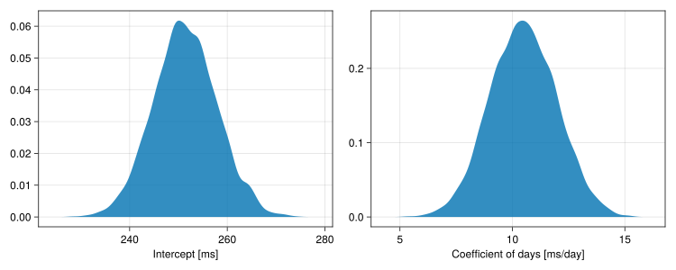

The sleepstudy data are from a study of the effects of sleep deprivation on response time reported in Balkin et al. (2000) and in Belenky et al. (2003). Eighteen subjects were allowed only 3 hours of time to sleep each night for 9 successive nights. Their reaction time was measured each day, starting the day before the first night of sleep deprivation, when the subjects were on their regular sleep schedule.
Note
This description is inaccurate. In fact the first two days were acclimatization, the third was a baseline and sleep deprivation was only enforced after day 2. To allow for comparison with earlier analyses of these data we retain the old data description for this notebook only.
1 Loading the data
First attach the MixedModels package and other packages for plotting. The CairoMakie package allows the Makie graphics system (Danisch & Krumbiegel, 2021) to generate high quality static images. Activate that package with the SVG (Scalable Vector Graphics) backend.
Code
usingCairoMakie # graphics back-endusingDataFramesusingKernelDensity # density estimationusingMixedModelsusingMixedModelsMakie # diagnostic plotsusingProgressMeterusingRandom # random number generatorsusingRCall # call R from JuliausingSMLP2023usingSMLP2023: datasetProgressMeter.ijulia_behavior(:clear)CairoMakie.activate!(; type="svg")
The sleepstudy data are one of the datasets available with the MixedModels package. It is re-exported by the SMLP2023 package’s dataset function.
sleepstudy =dataset("sleepstudy")
Arrow.Table with 180 rows, 3 columns, and schema:
:subj String
:days Int8
:reaction Float64
Figure 1 displays the data in a multi-panel plot created with the lattice package in R(Sarkar, 2008), using RCall.jl.
Code
RCall.ijulia_setdevice(MIME("image/svg+xml"); width=10, height=4.5)R"""require("lattice", quietly=TRUE)print(xyplot(reaction ~ days | subj,$(DataFrame(sleepstudy)), aspect="xy", layout=c(9,2), type=c("g", "p", "r"), index.cond=function(x,y) coef(lm(y ~ x))[1], xlab = "Days of sleep deprivation", ylab = "Average reaction time (ms)"))""";
Figure 1: Average response time versus days of sleep deprivation by subject
Each panel shows the data from one subject and a line fit by least squares to that subject’s data. Starting at the lower left panel and proceeding across rows, the panels are ordered by increasing intercept of the least squares line.
There are some deviations from linearity within the panels but the deviations are neither substantial nor systematic.
2 Fitting an initial model
contrasts =Dict{Symbol,Any}(:subj =>Grouping())m1 =let f =@formula(reaction ~1+ days + (1+ days | subj))fit(MixedModel, f, sleepstudy; contrasts)end
Est.
SE
z
p
σ_subj
(Intercept)
251.4051
6.6323
37.91
<1e-99
23.7805
days
10.4673
1.5022
6.97
<1e-11
5.7168
Residual
25.5918
This model includes fixed effects for the intercept, representing the typical reaction time at the beginning of the experiment with zero days of sleep deprivation, and the slope w.r.t. days of sleep deprivation. The parameter estimates are about 250 ms. typical reaction time without deprivation and a typical increase of 10.5 ms. per day of sleep deprivation.
The random effects represent shifts from the typical behavior for each subject. The shift in the intercept has a standard deviation of about 24 ms. which would suggest a range of about 200 ms. to 300 ms. in the intercepts. Similarly within-subject slopes would be expected to have a range of about 0 ms./day up to 20 ms./day.
The random effects for the slope and for the intercept are allowed to be correlated within subject. The estimated correlation, 0.08, is small. This estimate is not shown in the default display above but is shown in the output from VarCorr (variance components and correlations).
VarCorr(m1)
Column
Variance
Std.Dev
Corr.
subj
(Intercept)
565.51067
23.78047
days
32.68212
5.71683
+0.08
Residual
654.94145
25.59182
Technically, the random effects for each subject are unobserved random variables and are not “parameters” in the model per se. Hence we do not report standard errors or confidence intervals for these deviations. However, we can produce prediction intervals on the random effects for each subject. Because the experimental design is balanced, these intervals will have the same width for all subjects.
A plot of the prediction intervals versus the level of the grouping factor (subj, in this case) is sometimes called a caterpillar plot because it can look like a fuzzy caterpillar if there are many levels of the grouping factor. By default, the levels of the grouping factor are sorted by increasing value of the first random effect.
Code
caterpillar(m1; vline_at_zero=true)
Figure 2: Prediction intervals on random effects for model m1
Figure 2 reinforces the conclusion that there is little correlation between the random effect for intercept and the random effect for slope.
3 A model with uncorrelated random effects
The zerocorr function applied to a random-effects term creates uncorrelated vector-valued per-subject random effects.
m2 =let f =@formula reaction ~1+ days +zerocorr(1+ days | subj)fit(MixedModel, f, sleepstudy; contrasts)end
Est.
SE
z
p
σ_subj
(Intercept)
251.4051
6.7077
37.48
<1e-99
24.1714
days
10.4673
1.5193
6.89
<1e-11
5.7994
Residual
25.5561
Again, the default display doesn’t show that there is no correlation parameter to be estimated in this model, but the VarCorr display does.
VarCorr(m2)
Column
Variance
Std.Dev
Corr.
subj
(Intercept)
584.25897
24.17145
days
33.63281
5.79938
.
Residual
653.11578
25.55613
This model has a slightly lower log-likelihood than does m1 and one fewer parameter than m1. A likelihood-ratio test can be used to compare these nested models.
MixedModels.likelihoodratiotest(m2, m1)
model-dof
deviance
χ²
χ²-dof
P(>χ²)
reaction ~ 1 + days + zerocorr(1 + days | subj)
5
1752
reaction ~ 1 + days + (1 + days | subj)
6
1752
0
1
0.8004
Alternatively, the AIC or BIC values can be compared.
Table with 6 columns and 2 rows:
model pars geomdof AIC BIC AICc
┌────────────────────────────────────────────────
1 │ m2 5 29.045 1762.0 1777.97 1762.35
2 │ m1 6 28.6115 1763.94 1783.1 1764.42
The goodness of fit measures: AIC, BIC, and AICc, are all on a “smaller is better” scale and, hence, they all prefer m2.
The pars column, which is the same as the model-dof column in the likelihood ratio test output, is simply a count of the number of parameters to be estimated when fitting the model. For example, in m2 there are two fixed-effects parameters and three variance components (including the residual variance).
An alternative, more geometrically inspired definition of “degrees of freedom”, is the sum of the leverage values, called geomdof in this table.
Interestingly, the model with fewer parameters, m2, has a greater sum of the leverage values than the model with more parameters, m1. We’re not sure what to make of that.
In both cases the sum of the leverage values is toward the upper end of the range of possible values, which is the rank of the fixed-effects model matrix (2) up to the rank of the fixed-effects plus the random effects model matrix (2 + 36 = 38).
Note
I think that the upper bound may be 36, not 38, because the two columns of X lie in the column span of Z
This comparison does show, however, that a simple count of the parameters in a mixed-effects model can underestimate, sometimes drastically, the model complexity. This is because a single variance component or multiple components can add many dimensions to the linear predictor.
4 Some diagnostic plots
In mixed-effects models the linear predictor expression incorporates fixed-effects parameters, which summarize trends for the population or certain well-defined subpopulations, and random effects which represent deviations associated with the experimental units or observational units - individual subjects, in this case. The random effects are modeled as unobserved random variables.
The conditional means of these random variables, sometimes called the BLUPs or Best Linear Unbiased Predictors, are not simply the least squares estimates. They are attenuated or shrunk towards zero to reflect the fact that the individuals are assumed to come from a population. A shrinkage plot, Figure 3, shows the BLUPs from the model fit compared to the values without any shrinkage. If the BLUPs are similar to the unshrunk values then the more complicated model accounting for individual differences is supported. If the BLUPs are strongly shrunk towards zero then the additional complexity in the model to account for individual differences is not providing sufficient increase in fidelity to the data to warrant inclusion.
Figure 3: Shrinkage plot of means of the random effects in model m1
Note
This plot could be drawn as shrinkageplot(m1). The reason for explicitly creating a Figure to be modified by shrinkageplot! is to control the resolution.
This plot shows an intermediate pattern. The random effects are somewhat shrunk toward the origin, a model simplification trend, but not completely shrunk - indicating that fidelity to the data is enhanced with these additional coefficients in the linear predictor.
If the shrinkage were primarily in one direction - for example, if the arrows from the unshrunk values to the shrunk values were mostly in the vertical direction - then we would get an indication that we could drop the random effect for slope and revert to a simpler model. This is not the case here.
As would be expected, the unshrunk values that are further from the origin tend to be shrunk more toward the origin. That is, the arrows that originate furthest from the origin are longer. However, that is not always the case. The arrow in the upper right corner, from S337, is relatively short. Examination of the panel for S337 in the data plot shows a strong linear trend, even though both the intercept and the slope are unusually large. The neighboring panels in the data plot, S330 and S331, have more variability around the least squares line and are subject to a greater amount of shrinkage in the model. (They correspond to the two arrows on the right hand side of the figure around -5 on the vertical scale.)
5 Assessing variability by bootstrapping
The speed of fitting linear mixed-effects models using MixedModels.jl allows for using simulation-based approaches to inference instead of relying on approximate standard errors. A parametric bootstrap sample for model m is a collection of models of the same form as m fit to data values simulated from m. That is, we pretend that m and its parameter values are the true parameter values, simulate data from these values, and estimate parameters from the simulated data.
Simulating and fitting a substantial number of model fits, 5000 in this case, takes only a few seconds, following which we extract a data frame of the parameter estimates and plot densities of some of these estimates.
rng =Random.seed!(42) # initialize a random number generatorm1bstp =parametricbootstrap(rng, 5000, m1; hide_progress=true)tbl = m1bstp.tbl
An empirical density plot of the estimates for the fixed-effects coefficients, Figure 4, shows the normal distribution, “bell-curve”, shape as we might expect.
Code
begin f1 =Figure(; resolution=(1000, 400)) CairoMakie.density!(Axis(f1[1, 1]; xlabel="Intercept [ms]"), tbl.β1 ) CairoMakie.density!(Axis(f1[1, 2]; xlabel="Coefficient of days [ms/day]"), tbl.β2 ) f1end

Figure 4: Empirical density plots of bootstrap replications of fixed-effects parameter estimates
It is also possible to create interval estimates of the parameters from the bootstrap replicates. We define the 1-α shortestcovint to be the shortest interval that contains a proportion 1-α (defaults to 95%) of the bootstrap estimates of the parameter.
Table(shortestcovint(m1bstp))
Table with 5 columns and 6 rows:
type group names lower upper
┌──────────────────────────────────────────────────────
1 │ β missing (Intercept) 239.64 265.228
2 │ β missing days 7.42347 13.1607
3 │ σ subj (Intercept) 10.1722 33.0876
4 │ σ subj days 2.99479 7.66115
5 │ ρ subj (Intercept), days -0.401352 1.0
6 │ σ residual missing 22.701 28.5016
The intervals look reasonable except that the upper end point of the interval for ρ1, the correlation coefficient, is 1.0 . It turns out that the estimates of ρ have a great deal of variability.
Because there are several values on the boundary (ρ = 1.0) and a pulse like this is not handled well by a density plot, we plot this sample as a histogram, Figure 5.
Code
hist( tbl.ρ1; bins=40, axis=(; xlabel="Estimated correlation of the random effects"), figure=(; resolution=(500, 500)),)
Figure 5: Histogram of bootstrap replications of the within-subject correlation parameter
Finally, density plots for the variance components (but on the scale of the standard deviation), Figure 6, show reasonable symmetry.
Figure 7: Scatter-plot of bootstrap replicates of fixed-effects estimates with contours
6 References
Balkin, T., Thome, D., Sing, H., Thomas, M., Redmond, D., Wesensten, N., Williams, J., Hall, S., & Belenky, G. (2000). Effects of sleep schedules on commercial motor vehicle driver performance (DOT-MC-00-133). Federal Motor Carrier Safety Administration. https://doi.org/10.21949/1503015.
Belenky, G., Wesensten, N. J., Thorne, D. R., Thomas, M. L., Sing, H. C., Redmond, D. P., Russo, M. B., & Balkin, T. J. (2003). Patterns of performance degradation and restoration during sleep restriction and subsequent recovery: A sleep dose-response study. Journal of Sleep Research, 12(1), 1–12. https://doi.org/10.1046/j.1365-2869.2003.00337.x
Danisch, S., & Krumbiegel, J. (2021). Makie.jl: Flexible high-performance data visualization for julia. Journal of Open Source Software, 6(65), 3349. https://doi.org/10.21105/joss.03349